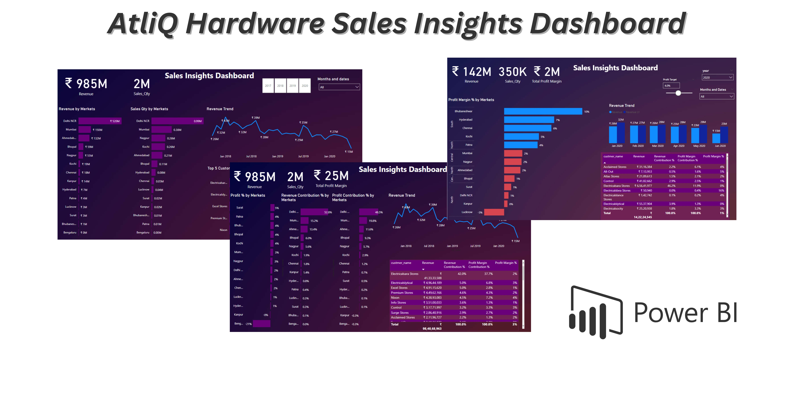
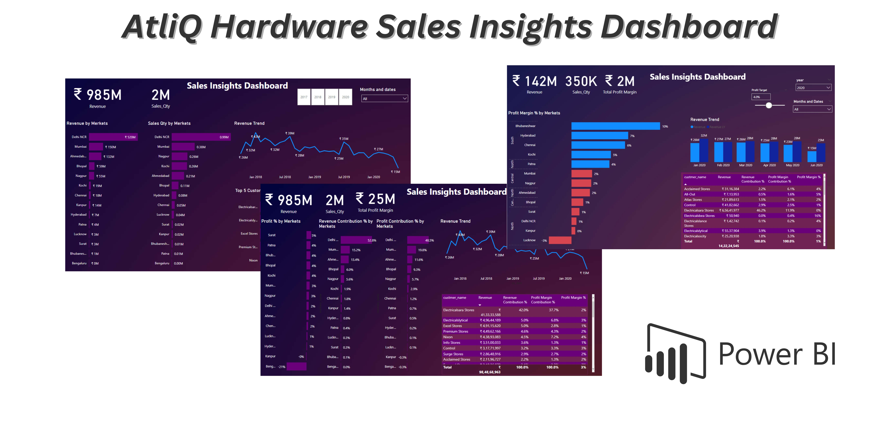
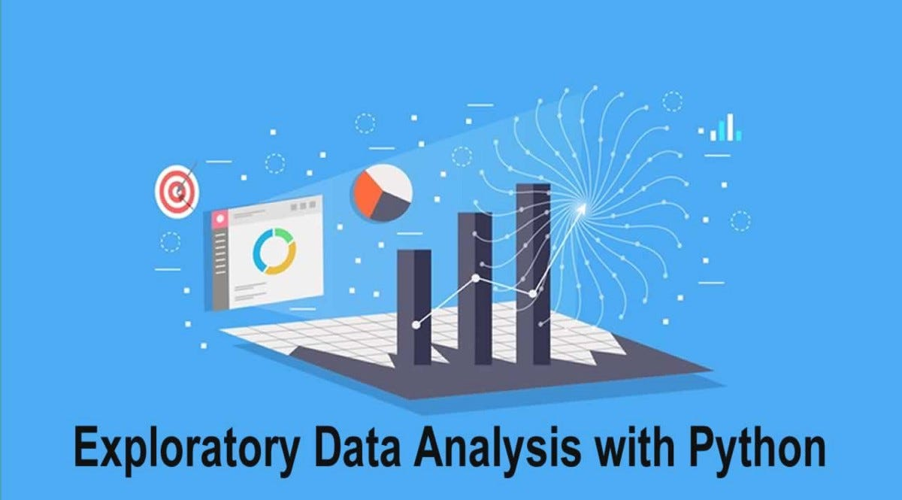
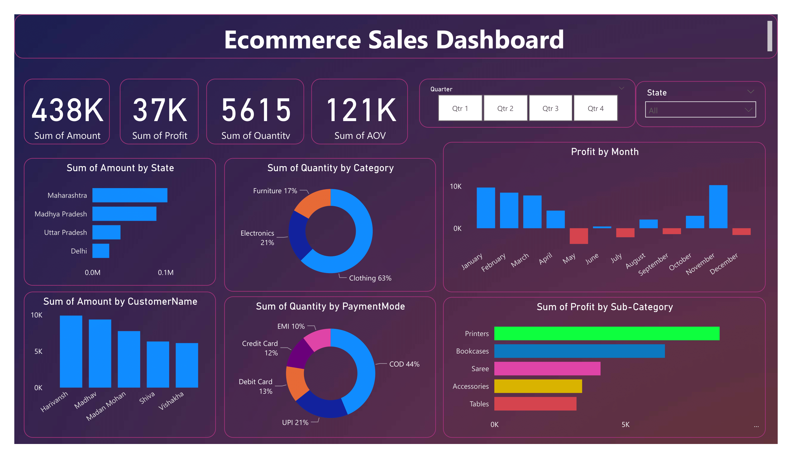
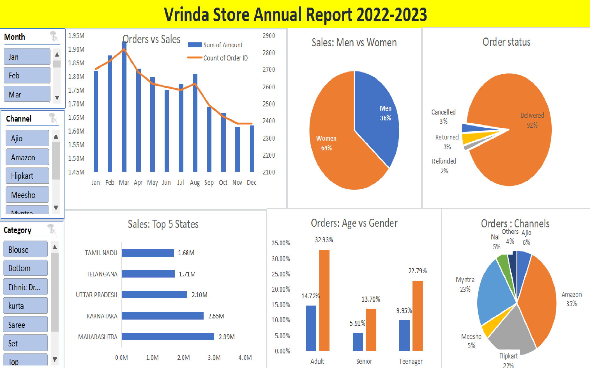

Hi, This is Tiyasa Dey. I am from Kolkata,India. Currently, I am pursuing a Master's in Data Science from Chandigarh University (online learning), and I have also completed my Bachelor's degree in Information Technology (Artificial Intelligence). I am someone who is always passionate about data and also enjoys working with data and turning it into actionable insights to drive informed business decisions.
Skilled in SQL,POWER BI,Excel,Python and Machine Learning
 

This project analyzed sales data of AtliQ Hardware and created an interactive dashboard with Power BI. ETL and data cleaning operations were performed to prepare the data for the dashboard, which can help generate sales insights on the business.

I have created several EDA projects with Python, such as Exploratory Data Analysis on Dataset - Terrorism, Image to Pencil Sketch, Music Recommendation, and Iris Flowers Classification ML Project. These projects used data visualization to predict the hot zone of terrorism, convert an RBG format image to grayscale, create a Music Recommendation model, and use different ML algorithms for model buliding.

This is a SQL project to analyze online music store data and get a lot of required information about that store. From This project i learned about how to analyze the music playlist database. I examine the dataset with SQL and that help the store understand its business growth Database and Tools used: Postgre SQL , PgAdmin4

Power BI was used to analyze Ecommerce sales data and create an interactive dashboard. Connections, joins, calculations, and user driven parameters were used to manipulate data and create customized visualizations. These included bar charts, pie charts, donut charts, clustered bars, scatter charts, line charts, area charts, map, and slicers.
This project aims to reduce the risk of coronavirus spread by using a machine learning model to classify images and state whether a face is wearing a mask or not. It uses a dataset of 10000 images, 800 images for validation, and two classes of images: with mask and without mask. The model is trained using CNN, Tensorflow, Keras, and Sigmoid activation functions. OpenCe is an openev library for real time computer vision. The model will take a webcam and send it to the machine learning model, which will return if the person is wearing a face mask or not.

I have created a interactive dashboard with excel ,that provide a annual sales report of 2022 for a particular store so that they can understand their customer and business direction and grow more sales in 2023.